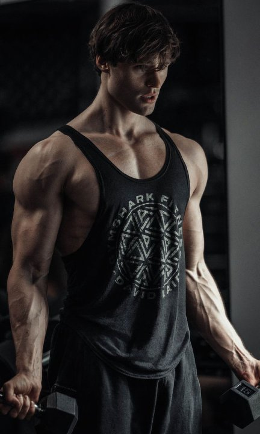
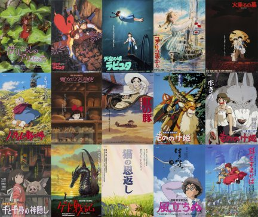

I am INSPIRED by
My name is Khai Bui
These are the artists that inspire me:
Akira Toriyama is the creator of Dragon Ball and many other great manga and anime series. Growing up, watching Dragon Ball on Cartoon Network was a part of my everyday childhood. As I got older, I began to appreciate not only the characters and stories but also the messages behind them. Dragon Ball taught me to keep pushing forward, even when things get difficult, and to never give up on my dreams.

David Laid is a fitness influencer who inspires me with his dedication to health and wellness. I used to be overweight and ate a lot of processed food without really thinking about my health. After watching his vlogs, I felt motivated to start going to the gym. Now, going to the gym has become part of my daily routine and a way for me to relieve stress.

Studio Ghibli has inspired my design style because I love how simple, warm, and imaginative its worlds feel. I want my own work to have that same sense of comfort and wonder while still feeling personal to me.
The biggest and most important thing that I learned while working on this project is the function of alt text and how it can helps people with visual impairments understand the content of images. I also learned how to write alt text that is descriptive and concise. Some of it was challenging to write especially when it came to describing the images of people, but I learned that it is important to focus on the context of the image and what is happening in it rather than just describing the physical appearance of the person. Additionally, I learned to use break line to make the code and the page more organized and easier to read. Before I would just add a lot of space but now I will add break line as well to help with the organization. The break line also helps create the gap between text and image. I usually do that in CSS but now I will use break line to help with that. One more thing that I want to mention was how I can adjust the size of the image inthe CSS. Before adding the images in the HTML, I went to Photoshop to reduce the size of the images to make the size smaller. Overall, this was a fun project and it did a great job of showing us how to link images together.